EV・SDV時代における産業連携モデルの比較研究
― 夏季予備調査による研究枠組みの修正と段階成果 ―
主な対象：Huawei / Xiaomi / BYD / Nissan / Sony Honda Mobility（SHM） 補足対象：CATL
当初は、EV・SDV化が進むほど企業間連携の範囲が拡大し、それが競争力向上につながるのではないかと考えていた。 しかし、中国での現地観察と日本企業の公開発言を照合すると、重要なのは連携の「多さ」ではなく、 どの技術を共通化・外部化し、どの能力を自社に残し、それらをどう統合して製品差別化につなげるか である可能性が高いと考えるようになった。
同時に、BYDの垂直統合やSHMの事業縮小を確認したことで、 「外部連携が多いほど有利」「異業種連携はそのまま競争優位になる」という単純な見方も修正する必要が生じた。
1. 当初の議題から何が進み、何を修正したか
| 当初の見方 | 夏季調査後の修正 |
|---|---|
| 中国EV企業は外部連携を積極的に活用し、日本企業は比較的自前主義が強いのではないか。 | 単純な中日二分法では説明できない。Nissan・HondaもSDVの基盤技術を共同開発・共通化しており、一方でBYDは重要技術の垂直統合を強く維持している。 |
| 企業間連携の範囲が広いほど、競争優位を形成しやすいのではないか。 | 連携は目的ではなく手段である。Huaweiのプラットフォーム型、Xiaomiの統合・製品定義型、BYDの垂直統合型など、異なるモデルが成立している。 |
| EV競争の中心は、電池容量・航続距離・充電性能など単体技術の向上にある。 | 技術性能の向上によって日常利用上の制約が縮小するほど、コスト・重量・航続距離・室内空間・快適性・価格をどう配分するかという「トレードオフ」と製品定義が重要になる。 |
| 異業種連携は、新しい価値を生み出しやすく、そのまま競争優位につながる。 | SHMは新しい価値概念を提示した一方、AFEELA 1等の開発・発売は2026年に中止された。価値創出と事業としての成立は分けて考える必要がある。 |
EV・SDV化によって基盤技術の高度化・共通化が進むほど、完成車メーカーの競争優位は、 「個別技術を保有しているか」だけでなく、 技術の選択・統合、製品定義、市場細分化、ブランド、UX設計へと広がる可能性がある。
2. 夏季休暇中の中国現地予備調査
2.1 調査場所と方法
| 対象 | 場所 | 方法 | 資料としての位置づけ |
|---|---|---|---|
| Huawei | 天津・龍湖天街内店舗 | 車両観察、店舗スタッフによる説明、非構造化ヒアリング | 現場での商品説明・認識を把握する予備的資料。企業公式見解とは区別する。 |
| Xiaomi | 天津・龍湖天街内店舗 | 実車・展示車への乗車体験、澎程シリーズを担当するスタッフとの非構造化ヒアリング | 実車体験と専門スタッフの説明による一次観察。礼儀・プライバシーへの配慮から録音・撮影は行っていない。 |
| BYD | 迪空间・新能源汽车科普馆（天津館） | 展示観察、展示パネルの記録、写真撮影 | 企業公式施設の展示資料として利用する。技術内容は必要に応じて公式資料で再確認する。 |
2.2 Huawei：プラットフォーム型連携から見えた「共通化と差別化」
店舗では、Huaweiの自動車関連協業について「五界三境」という表現が使われた。 現在の公開情報と照合すると、鸿蒙智行の「五界」は、問界・智界・享界・尊界・尚界の5ブランドで構成される。 一方、「三境」は啓境・奕境・華境を指し、Huawei乾崑／引望側の技術基盤と完成車メーカー側の製造・商品開発能力を組み合わせる深度共創ブランドとして整理できる。
ただし、Huawei乾崑の技術供給先は「三境」に限定されず、2026年時点では25を超えるブランド・50を超える車種との協業が公表されている。 したがって「五界三境」はHuaweiの自動車事業全体ではなく、より深い共同ブランド・共同商品開発の層を理解するための整理として扱う。
出典：鸿蒙智行公式、Huawei乾崑公式公開情報を基に作成。
現地観察では、智能座舱、運転支援、電動化技術などの基盤が近似する一方、車両ごとの差は価格帯、シャシー調整、車内体験、商品ポジショニングなどに現れているように感じられた。 またHuaweiとXiaomiの店舗での会話では、複数のスタッフから「ブランドの核心は製品の基調と魂を定義すること」という趣旨の発言が共通して得られた。 これは企業の公式見解ではないが、技術共通化が進んだ後のブランド役割を考える上で重要な予備的示唆である。
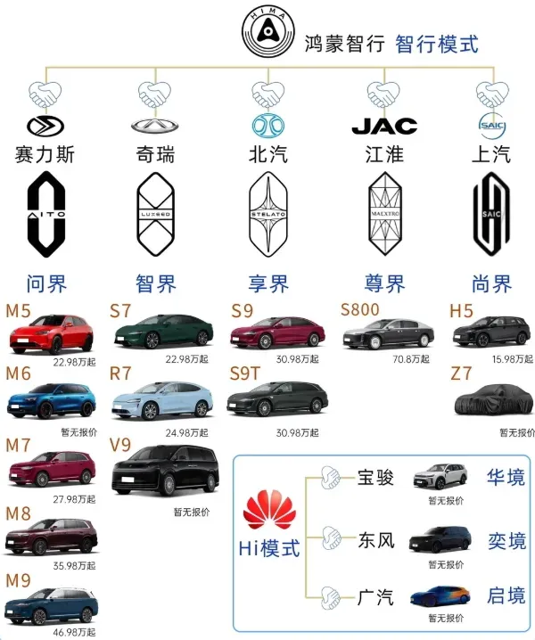
出典：ユーザー提供の微信記事 記事リンク
2.3 Xiaomi：成熟したサプライチェーンを「製品定義」で再構成する
Xiaomiの澎程（SkyNomad）シリーズでは、実車・展示車を体験し、澎程を担当するスタッフから商品設計について説明を受けた。 礼儀とプライバシーへの配慮から録音・撮影は行っていないため、発言内容は正式な引用ではなく、現地ヒアリングから得た予備的情報として扱う。
特に印象的だったのは、1列目から3列目までを可能な限りフラットにした床面、長いシートレール、回転シートなどを使い、 車内を対面、仕事、休憩、家族利用など複数の用途へ変化させる設計である。 ここでは「新しい部品を搭載する」ことよりも、家庭・会客・仕事・休息という使用場面を先に定義し、そのために既存の技術と部品を再配置することが重要である。
この事例は、成熟したサプライチェーンを利用しながらも、製品定義、パッケージング、UXによって差別化を作る可能性を示している。 今後は、雷軍を含むXiaomi経営陣・製品責任者の発表会、インタビュー、公式商品説明を分析し、現地ヒアリングで得た理解を検証する。
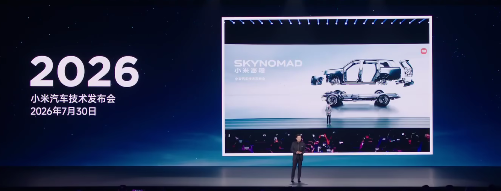
出典：小米澎程発表会（Bilibili） 動画リンク
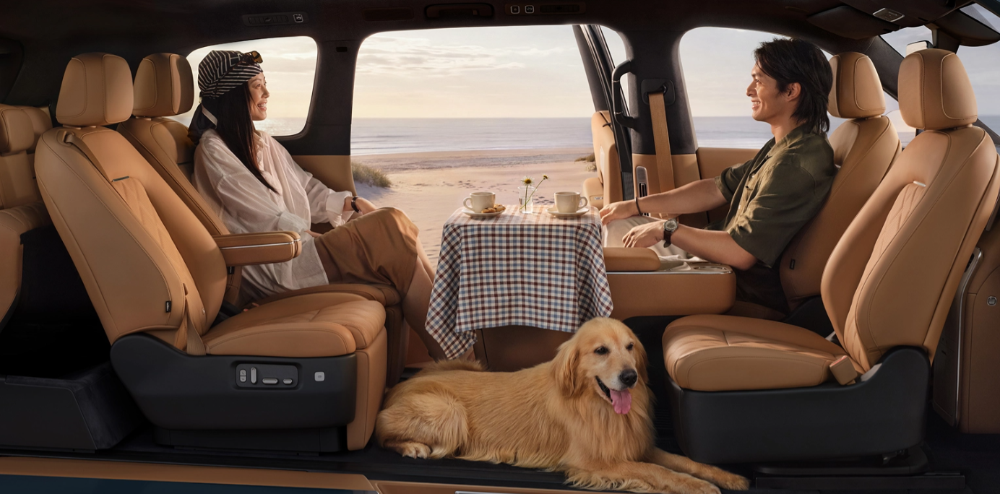
出典：Xiaomi EV公式サイト 公式ページ
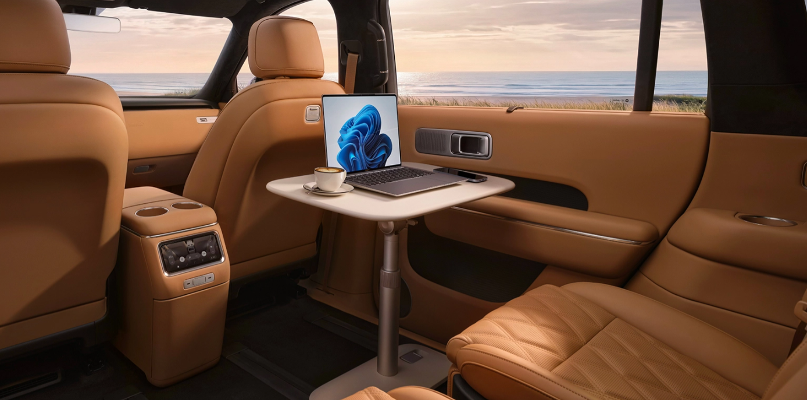
出典：Xiaomi EV公式サイト 公式ページ
2.4 BYD：垂直統合と社内産業連携
天津の迪空间では、電子・自動車・新エネルギー・軌道交通という4つの産業分野、IGBT・SiC、電池、電力制御、雲輦などが展示されていた。 EVでは従来の機械技術だけでなく、半導体、電気電子、ソフトウェア、アルゴリズムの比重が大きいことが、展示構成そのものから確認できた。
BYDはHuaweiやXiaomiとは異なり、電池、パワー半導体、電駆・電控など重要技術を企業グループ内部に多く抱える。 したがってEV・SDV時代の「産業連携」を、企業間提携だけでなく、企業内部の異なる産業・技術領域をどのように統合するかという視点まで広げる必要がある。
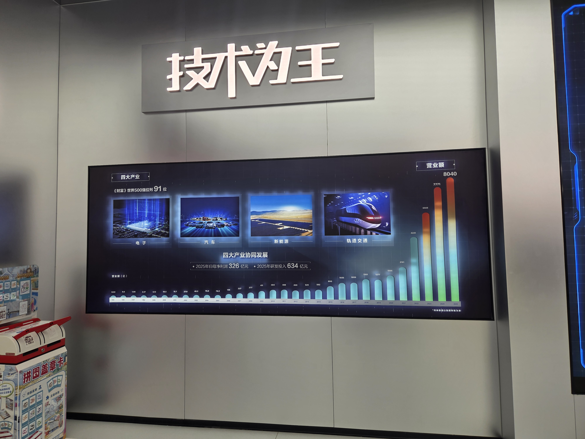

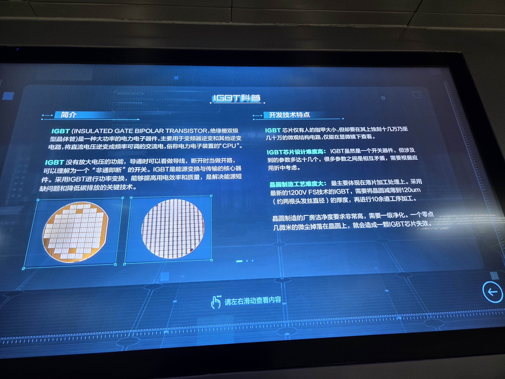
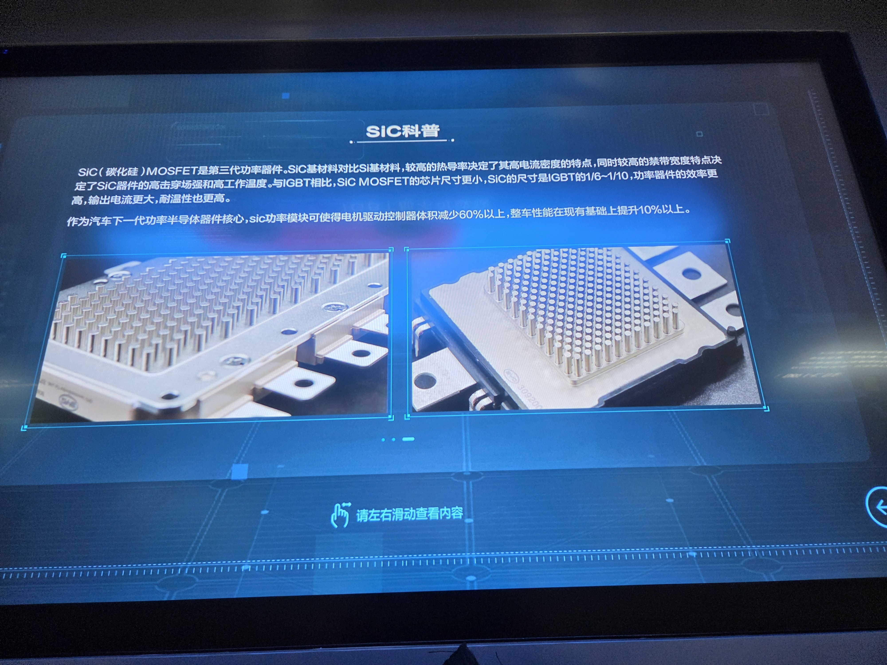
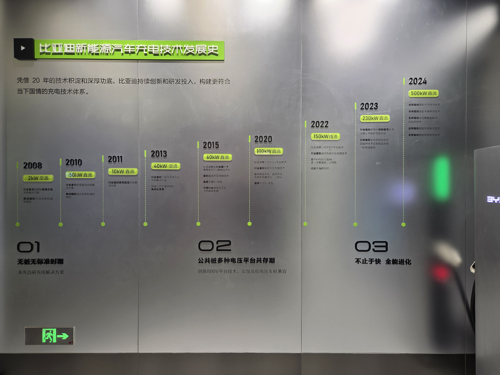
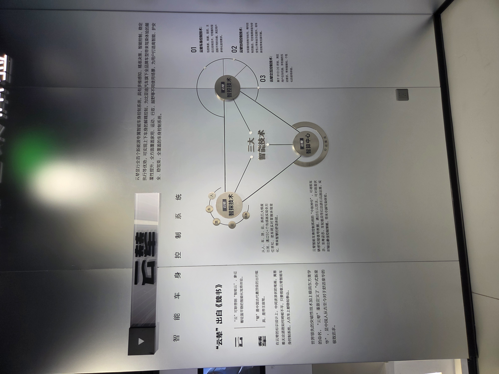
2.5 航続距離・急速充電の改善と、次の技術変数
現地での説明と展示を通じて、現在の中国EV市場では、航続距離と急速充電能力が多くの都市利用者の日常需要を満たせる水準まで改善しているという認識が強かった。 そのため研究上の焦点は、「EVは実用になるか」という二択ではなく、どの利用者にどの程度の航続距離・電池容量・充電性能が必要なのか、 そしてそのために価格、重量、空間、安全性をどのように評価するかへ移す方が適切である。
ただし、この評価には試験モードと実走行の差、気温、充電インフラ、長距離移動、電池劣化、車両価格などの条件が影響する。 したがって「航続距離問題は解決した」と断定するのではなく、都市部の日常利用では制約が大きく縮小した一方、評価条件と残存する弱点をさらに検討するという形で整理する。
一方、固体電池とL4～L5級の高度自動運転は、普及時期には不確実性があるものの、中国の新エネルギー車企業が次世代技術として重点投資する理由は理解できる。 固体電池が安全性・エネルギー密度・パッケージングを変えれば底盤構造や空間設計に影響しうる。 また、高度自動運転が社会的信頼と実用性を獲得すれば、運転者を常に前向きに固定する必要性が弱まり、座席配置や車内空間設計そのものが変化する可能性がある。 したがって両技術は「すぐ普及するか」という予測ではなく、車両アーキテクチャーとUXを変える重要な将来変数として追跡する。
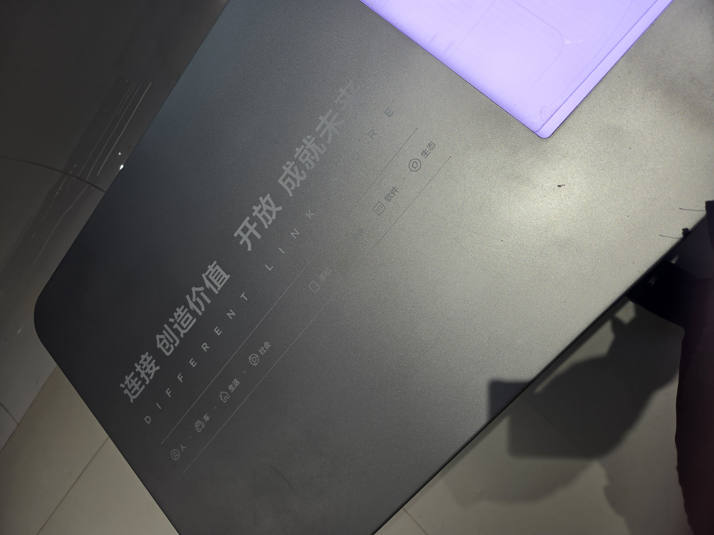
2.6 補足ケース：CATL（寧徳時代）―「電池供給」から車両プラットフォームへ
CATLは補足ケースとして扱う。磐石底盤（Bedrock Chassis）では、CTC（Cell to Chassis）によって電芯を底盤構造へ直接統合し、 上車体と下車体のデカップリング、標準化インターフェース、電駆・熱管理・高低圧制御等の統合を進めている。 CATLは「一つの底盤アーキテクチャーで複数車種に対応する」考え方を提示し、量産開発期間を従来の36か月以上から12～18か月へ短縮できるとしている。
これは、従来「部品供給者」と考えられていた電池メーカーが、完成車メーカーの車両アーキテクチャー、開発速度、空間設計へまで影響を及ぼす可能性を示す。 さらに2026年には、Toggとの量産協業で、Togg側がユーザー体験・商品要求・デジタルアーキテクチャーを主導し、CATL側の底盤プラットフォームを利用する分業モデルも公表された。 今後はHuawei型の智能化プラットフォームと比較し、サプライヤー側がどこまで「製品定義の手前」まで入り込むのかを検討する。
3. 日本側資料との照合：Nissan / Honda
Nissanの公開資料では、パートナーシップを活用しながら、アーキテクチャーの主導権とブランドアイデンティティを自社で保持する方向が示されている。 また、Japan Mobility Showの講演では、EV・e-POWER・ICEのどれを採用するかをモデルの目的と市場需要に応じて選択するとされており、 単一技術の最大化よりも「顧客・商品目的に応じた技術選択」が重視されている。
Nissan・Honda・Mitsubishi Motorsの共同記者会見では、SDV、電動化、車両知能化には巨額の投資が必要であり、単独ですべてを賄うことが難しいという認識が共有された。 同時に、共通のコア領域で効率を高めながら、それぞれのブランドらしさを維持することの重要性も語られている。
さらにNissanとHondaは2026年8月、次世代SDV向けの中核ECU、車載OS、ミドルウェア、車両制御ソフトの主要部分を共同開発・共通化する契約を締結した。 これは、基盤部分は共同化してコスト・速度・規模を確保し、顧客が認識するブランド・商品体験には各社の差異を残すという考え方の具体例として位置づけられる。
Huawei店舗で観察した「共通する智能化基盤＋異なる車両体験」と、Nissan/Hondaの「SDV基盤共通化＋ブランド保持」は、 制度や主導企業は異なるものの、差別化しにくい基盤を共通化し、顧客が感じる価値に資源を集中するという共通論理を持つ可能性がある。
4. 日本側資料との照合：Sony Honda Mobility
SHMは、Sonyのデジタル・エンターテインメント・AI領域とHondaの車両開発能力を融合し、従来型自動車とは異なるモビリティ体験を作ることを狙った異業種JVである。 川西泉氏の公開インタビューでは、将来の車を単なる移動機械ではなく、スマートフォンの延長、生活に寄り添うプラットフォーム、AIと継続的に対話するデバイスとして捉える考え方が示されていた。
また開発現場の報道では、SonyとHonda出身の技術者が同一空間で開発し、シミュレーターやバーチャル空間を活用して試験・デザインを進める様子が確認できた。 これは異業種連携が、製品機能だけでなく開発プロセスそのものを変える可能性を示している。
一方、2026年にはAFEELA 1等の開発・発売中止とSHM事業の縮小が発表された。 したがってSHMは、「異業種連携の成功例」と単純に扱うのではなく、 技術的・理念的な補完関係を、量産・価格・市場適合・事業採算へ結びつける難しさを示す反証ケースとして扱う方が研究上有効である。
5. 現時点の比較整理
| 企業・ケース | 暫定類型 | 共通化・外部化するもの | 内部に残す／差別化するもの | 研究上の意味 |
|---|---|---|---|---|
| Huawei | プラットフォーム型 | 智能運転、座舱、車控などを複数OEMへ展開 | 完成車側のシャシー、価格、商品定位、ブランド | 共通技術上での差別化 |
| Xiaomi | 統合・製品定義型 | 成熟した外部サプライチェーンを活用 | UX、空間、ソフト、生活シーン、商品コンセプト | 製品定義と統合能力 |
| BYD | 垂直統合型 | 外部依存を相対的に抑える | 電池、半導体、電力制御、車両制御等を社内統合 | 内部産業連携の重要性 |
| CATL | サプライヤー・プラットフォーム型 | CTC、電駆、熱管理、底盤、標準IFを一体提供 | 電池・底盤を核とするアーキテクチャー能力 | OEM－サプライヤー境界の変化 |
| Nissan / Honda | 選択的共同開発型 | SDV基盤、ECU、OS、ミドルウェア等 | ブランド、商品体験、車種ごとの価値 | 伝統OEMによる基盤共通化 |
| SHM | 異業種融合型 | Sony×Honda＋外部デジタル企業 | 新しいモビリティUX | 価値創出と商業化のギャップ |
6. 現時点の疑問点・証拠不足
- 店舗スタッフの発言の位置づけ： Huawei・Xiaomiで得た説明は有用な一次観察であるが、企業公式見解ではない。 特に「ブランドが製品の基調と魂を定義する」という発言は録音していないため、直接引用ではなく「ヒアリングで得た趣旨」として扱い、今後経営者・製品責任者の公式発言で検証する。
- 航続距離・急速充電の評価： 技術面と現場評価の両方から、都市部の日常利用では多くのユーザー需要を満たす水準へ近づいていると考えられる。 今後の論点は「足りる／足りない」という二択ではなく、試験モードと実走行の差、気温、長距離利用、電池劣化、充電網、車両価格を含め、どの条件で十分と評価できるかを整理することにある。
- 固体電池と高度自動運転の位置づけ： 普及時期を断定することはできないが、両技術は中国EV企業が重点投資する重要な将来変数である。 固体電池は底盤・電池配置・安全設計、高度自動運転は座席配置・室内空間・HMIを変える可能性があるため、技術成熟度と車両設計への影響を分けて追跡する。
- Xiaomiの現地ヒアリングの検証： 澎程担当スタッフへの質問と実車体験は行ったが、録音・録画は行っていない。 今後は雷軍を含むXiaomi経営陣・製品責任者の発表会、インタビュー、公式商品資料を分析し、現地で得た説明と照合する。
- BYD展示資料の解釈： 展示写真は一次資料として有用だが、展示が企業の自己説明である点には注意が必要である。 IGBT、SiC、充電、雲輦等の性能値や技術的意味は、必要に応じて公式技術資料や第三者資料で補強する。
- CATLの影響範囲： 磐石底盤が実際の量産車でどこまで車両設計・ブランド差別化を規定するのかは、採用車種の増加後に検証する必要がある。 特にOEM側が保持する商品定義・上車体設計・デジタルアーキテクチャーとの分業境界を確認する。
- ケース間の比較可能性： Huaweiは技術企業、CATLは電池・底盤サプライヤー、BYD/NissanはOEM、SHMはJVであり企業属性が異なる。 比較軸を「企業の優劣」ではなく、どの技術領域を内部化・外部化し、誰が製品定義権を持つかに統一する必要がある。
- 公開発言の広報バイアス： 発表会、モーターショー、企業展示は広報的性格が強い。 今後は決算資料、技術文書、経営者インタビュー、第三者取材を併用して検証する。
7. 期中報告に向けた暫定RQ
EV・SDV時代において、完成車メーカーおよび関連企業は、どの技術を共通化・外部化し、どの能力を自社に残すことで製品差別化を実現しているのか。
プラットフォーム型、垂直統合型、選択的共同開発型などの違いは、製品開発速度・コスト・差別化の方法にどのような影響を与えるか。
SDV化によって、差別化の中心は単体ハードウェア性能から、製品定義・UX・ソフトウェア統合へどの程度移動しているか。
電池・智能化プラットフォームなどを提供するサプライヤーは、従来OEMが持っていた車両アーキテクチャーの決定権へどこまで入り込んでいるか。
8. Next Step
- 現地観察と公式発言の照合：Huawei・Xiaomi・BYDについて、経営者・製品責任者の発表会、公式技術資料、インタビューを収集し、現地ヒアリングで得た理解を検証する。
- 比較軸の固定：「内部化／外部化」「共通化」「製品定義権」「ブランド差別化」「開発速度」「コスト」の6軸を中心に比較表を作る。
- CATLを補足ケースとして追跡：磐石底盤の量産採用状況と、OEM側が保持する設計・商品定義範囲を確認する。
- 将来技術を別レイヤーで追跡：固体電池、L4～L5級自動運転について、「普及予測」ではなく「車両アーキテクチャーをどう変えうるか」を整理する。
- SHMを反証ケースとして整理：異業種連携が生んだ価値と、それを量産・価格・市場・収益へつなげられなかった要因を分けて検討する。
- 期中報告へ接続：夏季調査を研究枠組み修正の根拠として提示し、次回は企業別の証拠表と初期比較結果を示す。
9. 参考資料・画像出典（暫定）
- 鸿蒙智行公式サイト：https://hima.auto/
- Huawei乾崑智能汽车解决方案「合作车型」：https://auto.huawei.com/cn/vehicle-models/
- Huawei乾崑「2026 华为乾崑媒体日」：https://auto.huawei.com/cn/news/2026/2026-7-16-media-open-day
- Xiaomi EV 澎程 N90 公式ページ：https://www.xiaomiev.com/skynomad/n90
- CATL「宁德时代磐石底盘，重新定义智能底盘安全新标准」：https://www.catl.com/news/8210.html
- CATL「Toggとの磐石底盤量産合作」：https://www.catl.com/news/9866.html
- Nissan Motor Co., Ltd. “Partnerships” / Re:Nissan 関連資料。
- Honda / Nissan, 次世代SDV向けECU・ソフトウェア共通化に関する2026年8月発表。
- Sony / Honda / Sony Honda Mobility, 2026年3月・4月のSHM事業方針見直しに関する発表。
- ユーザー提供転録：Nissan Japan Mobility Show 発表。
- ユーザー提供転録：Nissan × Honda × Mitsubishi Motors 共同記者会見。
- ユーザー提供転録：Sony Honda Mobility 開発現場報道。
- ユーザー提供転録：WIRED Japan × Sony Honda Mobility 川西泉インタビュー。
- 画像H1：ユーザー提供の微信記事。
- 画像X1：小米澎程発表会（Bilibili）スクリーンショット。
- 画像X2・X3：Xiaomi EV公式サイトのスクリーンショット。
- 画像B1・B2・B2.1・B3・B4・写真4：筆者撮影（天津・迪空间）。
- 画像B1.1：搜狐記事 https://www.sohu.com/a/750919645_121106991
10. BYD迪空间・未整理写真ギャラリー
以下は本文でまだ分析対象として確定していない写真を、後から内容を確認できるように置くための閲覧欄である。 現時点で意味が明確な写真4・22・23のみ先に配置する。その他の番号写真は、実ファイル一覧を確認後に同じ形式で追加する。
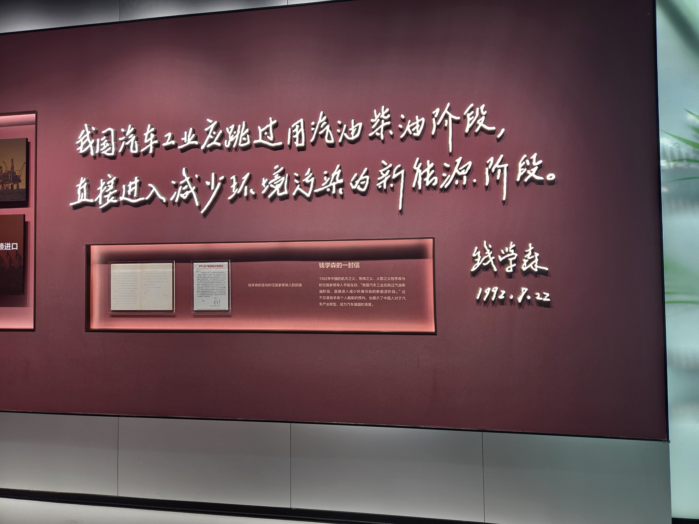
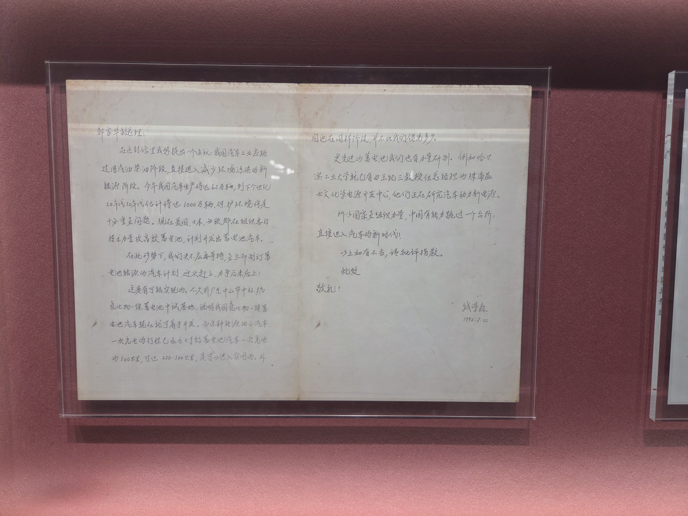
※ 写真22・23は、中国における新エネルギー技術発展の歴史的文脈を示す補助資料にはなり得るが、 これだけで「中国政府による現在のEV支援」を直接証明する資料とはしない。政策支援を論じる場合は、国家政策・補助金・NEV産業計画等の一次資料を別途用いる。